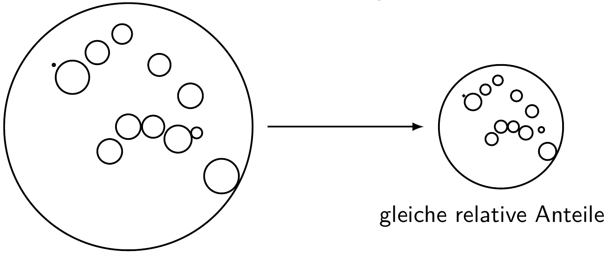
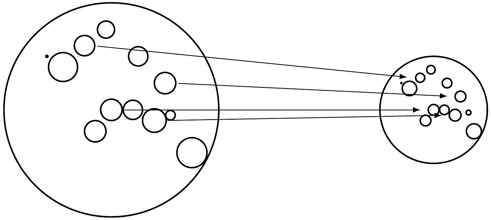
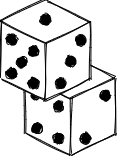
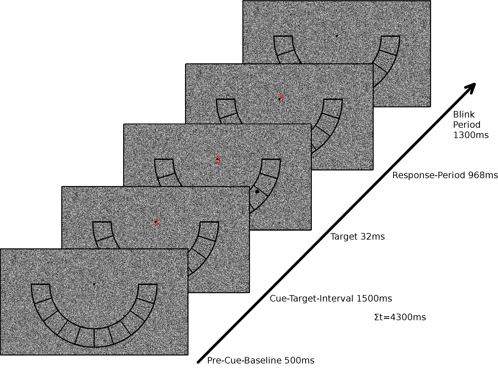

Material und Stichprobe
Organisatorisches
Semesterplan
| Sitzung | Datum | Sitzungstitel |
|---|---|---|
| 1 | 02.11.2020 | Warum wissenschaftliche Psychologie |
| 2 | 28.11.2020 29.11.2020 | Hypothesen und der Prozess der Hypothesenprüfung |
| 3 | 28.11.2020 29.11.2020 | Experimentelles Vorgehen |
| 4 | 28.11.2020 29.11.2020 | Literaturrecherche |
| 5 | 28.11.2020 29.11.2020 | Operationalisieren und Messen |
| 6 | 12.12.2020 13.12.2020 | Experimentelle Versuchspläne |
| 7 | 12.12.2020 13.12.2020 | Störvariablen im Experiment |
| 8 | 12.12.2020 13.12.2020 | Nicht-experimentelle Versuchspläne |
| 9 | 12.12.2020 13.12.2020 | Material und Stichprobe |
| 10 | 23.1.2021 24.1.2021 | Auswertung, Darstellung und Interpretation |
| 11 | 23.1.2021 24.1.2021 | Ethische Probleme im Versuch |
| 12 | 23.1.2021 24.1.2021 | Publikationsprozess |
| 13 | wird noch bekannt gegeben | Vorstellung der Gruppenarbeiten |
| 14 | wird noch bekannt gegeben | Klausurvorbereitung |
Wiederholung
Stichprobe
Repräsentativität
Überlegungen zur Repräsentativität einer Stichprobe beziehen sich auf die Generalisierbarkeit der Ergebnisse also die externe Validität der Studie.
Methoden zur Stichprobenziehung
| ohne Zufallsauswahl | mit Zufallsauswahl | |
|---|---|---|
| mit Schichtung | Quotenstichprobe | geschichtete Zufallstichprobe |
| ohne Schichtung | anfallende Stichprobe | Zufallsstichprobe |
Stichproben mit Schichtung und ohne Zufallsauswahl
Quotenstichproben:
- Repräsentativität wird über vorgeschriebene Anteile bestimmter Charakteristika in Population angestrebt

- dabei geschieht die Auswahl der Probanden über Gelegenheit, aber so, dass Quoten erfüllt werden.
Stichproben mit Schichtung und Zufallsauswahl
Geschichtetete Zufallsstichprobe:
- Repräsentativität wird über zufälliges Ziehen aus relevanten Subgruppen der Population zu erreichen versucht.
- Auch hier wird versucht, die relative Zusammensetzung der Population zu erhalten

- Dabei wird aus den jeweiligen Subgruppen der Population zufällig gezogen
Stichproben ohne Schichtung und mit Zufallsauswahl
Zufallsstichprobe:
- Die Stichprobe wird zufällig ohne Berücksichtigung irgendwelcher Parameter aus der Population gezogen

Stichproben ohne Schichtung und ohne Zufallsauswahl
Gelegenheitsstichprobe:
- Die Stichprobe besteht aus den Probanden, die gerade zur Verfügung stehen.

Übung zu Stichproben
Fassen Sie die Ergebnisse zusammen.
Überlegen Sie, auf welche Art und Weise die Stichprobe gezogen wurde.
Wägen Sie potentielle Vor- und Nachteile der Ziehungsmethode gegeneinander ab.
Überlegen Sie, ob die Art der Ziehung Ihre Interpretation der Ergebnisse beeinflusst.
Material
Paradigma: Stimuli, Aufgaben
Fragebögen und Tests
Instruktionen
Geräte
Computer, Monitor, Reaktionserfassung
Spezielle Messgeräte
Software
Zur Erstellung von Stimuli
Für Web-basierte Experimente
Zur Versuchssteuerung
Räume
Stimuli und Paradigma

Beispiele für Geräte
EEG
Eye Tracker
TMS
…
Instruktionen
Gute Instruktionen
kurz, prägnant, leicht zu verstehen, fehlerfrei, eindeutig
einfache Sprache, keine Abkürzungen, keine Fachbegriffe!
Wiederholungen statt Synonyme!
Aufbau
Worum geht es?
Wie lange dauert es?
Was geschieht?
Was ist zu tun?
Beispiel-Durchgang oder sogar Übung
Fragen klären!
schlechte Version:
Du nimmst an einem Experiment zur „mentalen Rotation“ teil.
Das gesamte Experiment wird eine Weile dauern.
Jeder Durchgang beginnt mit einem foveal zu fokussierenden Fixationspunkt, worauf die Präsentation eines Reizes geschehen wird, den du dann bitte, sofern es dir möglich, beachten sollst. Diese Reize sind vielleicht in verschiedenen Winkeln rotiert, also nicht in Standard-Orientierung. Die Reize sind aufrecht orientiert. Außerdem können die Zeichen entweder ‚normal’ oder ‚nicht-normal’ sein. Deine Aufgabe besteht darin, i.d.R. eine Taste zu drücken. Gib damit an, ob das Zeichen ‚normal’ oder gespiegelt ist.
bessere Version:
Du nimmst an einem Experiment zur „mentalen Rotation“ teil.
Das gesamte Experiment wird ca. 40 Minuten dauern.
Jeder Durchgang beginnt mit einem kleinen Punkt in der Bildschirmmitte. Danach wird dir ein einzelner Buchstabe oder eine Ziffer (schwarze Schrift auf weißem Grund) präsentiert. Diese Zeichen sind meistens rotiert, also nicht in der üblichen aufrechten Position. Außerdem können die Zeichen entweder ‚normal’ oder gespiegelt dargestellt sein. Deine Aufgabe besteht darin, per Tastendruck zu entscheiden, ob das Zeichen ‚normal’ oder gespiegelt ist - unabhängig von der Rotation.
Beispiele:
In diesem Experiment werden folgende Zeichen verwendet: 2 5 7 G J R
Auf dem vor dir liegenden Taster gilt folgende Tastenzuordnung:
Du sollst deine Entscheidung möglichst schnell und fehlerfrei treffen.
Hast du noch Fragen?
aus Bittrich & Blankenberger
Instruktionen
Der Inhalt der Instruktionen kann mehr oder weniger vollständig bzw. wahrheitsgemäß über Ziel und Ablauf des Experiment informieren. Man unterscheidet:
Instruktionen mit vollständiger Information: Der VP werden alle Informationen über das Experiment uneingeschränkt mitgeteilt
Instruktionen mit unvollständiger Information: Der Vp werden nur Details vorenthalten, welche die Hypothesen offenlegen oder das Verhalten der Vp ungewollt beeinflussen könnten
Instruktionen mit Falschinformation: Der Vp werden explizit falsche Informationen gegeben um den wahren Untersuchungsgegenstand zu verschleiern oder als Teil der Operationalisierung einer UV. Dies ist ethisch problematisch aber manchmal notwendig und erfordert eine anschließende Aufklärung (debriefing).
Probelauf
Was kann denn schon schief gehen?
Instruktionen werden nicht verstanden
Instruktionen werden falsch verstanden
Aufgabe ist zu leicht (Deckeneffekt, ceiling effect)
Aufgabe ist zu schwer (Bodeneffekt, bottom effect)
Was kann denn schon schief gehen?
Messungen sind zu fehleranfällig
Technik oder Software funktioniert nicht (immer)
Versuch dauert zu lang
Versuch ist zu ermüdend oder belastend
Vpn werden nicht genug motiviert
Dokumentation
ordentlich und vollständig geführte schriftliche Dokumentation (in Papierform und/oder digital)
Kontaktdaten der Vpn und Schlüsselliste mit Vp-Namen und Vp-Codes (\(\rightarrow\) Tresor)
Checkliste für allgemeinen Versuchsdurchlauf
Protokollbogen, Vp-Laufzettel (Case Report Form, CRF)
VP-Code
Datum, Start- und Endzeit
Versuchsbedingung
ggf. weitere erfragte oder beobachtete Informationen (wenn nicht in separaten Fragebögen)
Raum für Notizen zu besonderen Vorkommnissen
Daten sichern
Sinnvolle und eindeutige Benennung von Unterlagen und Dateien
Studienordner (mit Name von Versuch und Vl) in abschließbarem Schrank
Digitale Daten an mehreren (auch räumlich getrennten) Speicherorten
Möglicher Zugriff durch Unbefugte muss verhindert werden!